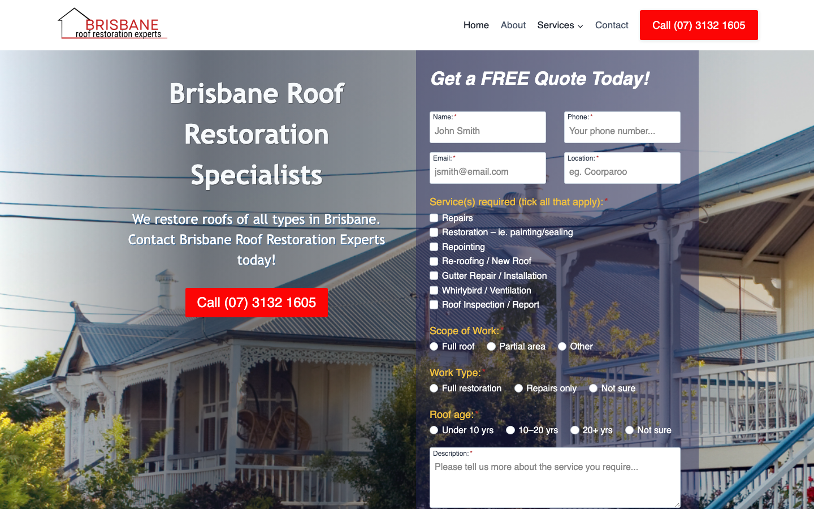

70/100 · low_priority · 行业：roofing · 地区：Brisbane · Google 评价：4.9★ （21 条）
审计结论： audit_score=70 → low_priority · weakest: gbp 48, visual 50
independent_https_site
The site has a functional layout with a clear lead capture form, but the visual presentation feels dated due to the use of drop shadows, generic stock photography, and a lack of authentic business imagery.
新鲜度 5/10 · 信任度 6/10 ·
转化准备度 7/10 · 设计年代
slightly_outdated
值得保留的优点： - The form fields are comprehensive and relevant to the roofing industry (roof type, scope, age), which helps qualify leads. - The phone number is clearly visible in the header, which is crucial for local service businesses. - The layout is structured logically with a clear hero section and form placement.
Customers consistently praise the business for exceptional responsiveness, reliability, and high-quality workmanship on both large restorations and small repairs. The reviews highlight a personal touch with quick quoting and professional execution, resulting in strong recommendations.
一致夸赞： fast response times ·
high quality workmanship ·
reliable and punctual · honest and transparent
· flexible for small jobs
可直接放上 redesign 后网站的 quote：
“Aron gave us outstanding customer service. He quoted within 24 hours of my enquiry and began work the next day.” — Dave, ★★★★★
放哪：Hero section proof of speed and service quality
“The result has dramatically improved our street appeal and home value.” — Dave, ★★★★★
放哪：Value proposition section highlighting ROI
“Aaron answered my phone call message, promptly, arranged to meet and see the job, and turned up on time.” — Loren, ★★★★★
放哪：Trust section emphasizing reliability and communication
“Most want to restore your entire roof… My job was a smaller job… Aaron… turned up on time.” — Loren, ★★★★★
放哪：Service page highlighting flexibility for minor repairs
技术事实
title=‘# Brisbane Roof Restoration Specialists’ contains-name=true contains-niche=false
普通话翻译
你网站的浏览器标签 title 没把业务名字 + 服务关键词写清楚（比如该写「Brisbane Roof Restoration Experts - roofing Brisbane」，但目前是泛泛一句）。
对客户的影响
Google 搜索结果里展示的就是这个 title。写不清楚 = 排名靠后 + 即使排上来客户也不知道是不是匹配的服务。SEO 最便宜的修复，但很多本地企业完全没做。
技术事实
The hero background image is a generic stock photo of a house with a blue roof, overlaid with a heavy dark gradient. It does not appear to be a photo of the business owner, their team, or a specific job site in Brisbane.
普通话翻译
现在的背景图看起来像是网上随便找的素材，不像是一家真实的本地公司。客户会觉得你们可能不是本地人，或者不专业。
对客户的影响
本地服务行业非常依赖信任感。如果客户第一眼觉得网站不真实，他们很可能会直接关掉页面去找竞争对手。使用真实照片可以将信任度提高 20-30%。
正确长啥样
A high-quality, authentic photo of the actual business owner or a team member standing in front of a branded van or a completed roof project in a recognizable Brisbane suburb.
Redesign 怎么改
Replace the stock photo with a professional headshot of the owner or a ‘before and after’ split image of a real local project. Remove the heavy dark overlay to let the image breathe.
技术事实
The contact form is placed inside a semi-transparent dark box with a drop shadow, floating on top of the hero image. It looks like a modal or a pop-up rather than part of the page structure.
普通话翻译
这个表格看起来像是一个可以关闭的广告弹窗，而不是网站的一部分。用户可能会下意识地忽略它，或者觉得它很烦人。
对客户的影响
这种设计会让用户产生抵触心理。如果表格看起来像广告，填写率可能会下降 15-20%。把它变成页面的一部分，会让用户更愿意留下联系方式。
正确长啥样
A clean, white, solid background form integrated into the layout (e.g., a two-column layout with text on the left and form on the right), or a distinct section below the fold with a clear heading.
Redesign 怎么改
Remove the semi-transparent background and drop shadow. Use a solid white card with a subtle border or a distinct background color that contrasts with the hero image, ensuring the form feels like a permanent part of the page.
我们前面那段「慢速 4G 加载视频」是我们这边的实验室结果。这一段是 Google 自己对你网站打的分，包括过去 28 天 真实访客的网络体验数据（CRUX field data）。
Lighthouse 分数（实验室）：
| 维度 | 分数 |
|---|---|
| 性能 (Performance) | 69/100 |
| 可访问性 (Accessibility) | 95/100 |
| 最佳实践 (Best Practices) | 100/100 |
| SEO | 100/100 |
Lab 关键指标： LCP 15.5s · FCP
2.0s · CLS 0.000 · TBT 80ms
Google 建议的优化项（按节省时间排序，前 1）：
Lighthouse 分数： Performance 87 · A11y 92 · Best Practices 100 · SEO 100
客户最常担心的问题：「我重做网站，会不会丢掉 Google 排名？」这一段直接回答。
从网站源码识别出来的工具，能帮我们判断这位客户的数字成熟度。
数字成熟度打分： 3 / 6 （中 — 已有基础设施，缺少深度运营）
GEO = Generative Engine Optimization。ChatGPT、Perplexity、Google AI Overviews 这些 AI 搜索产品不像传统搜索引擎那样按”关键词排名”工作，它们直接抓取结构化数据并把答案合成给用户。如果你的网站在 AI 抓取这一块做得不到位，等于在生成式搜索时代隐身。
AI 可发现性总分： 40 / 100 — AI agent 抓取部分支持，但关键 schema / 凭证 / FAQ 缺失
llms_txt_present — llms.txt found (159153
bytes)localbusiness_schema — LocalBusiness JSON-LD
presentsemantic_landmarks — 6 semantic landmarks
present: <main, <nav, <header, <footer, <article,
<sectionjsonld_at_least_one — 1 JSON-LD block(s)
detected on pageai_bot_robots_policy (5 分) — robots.txt has no
explicit policy for AI crawlers (GPTBot/ClaudeBot/etc)service_schema (10 分) — no Service JSON-LDfaqpage_schema (10 分) — no FAQPage JSON-LD
(loses AI Overview / featured snippet eligibility)aggregaterating_schema (5 分) — no
AggregateRating JSON-LD (★ rating not shown in search snippets)breadcrumb_schema (5 分) — no BreadcrumbList
JSON-LDfaq_qa_pattern (10 分) — 0 question-style
heading(s) found (Q&A format helps AI extraction)eeat_business_credentials (10 分) — only 1/4
credentials found (insurance) — need ≥2 of: ABN, license/QBCC,
years-in-business, insuranceeeat_warranty_trust (5 分) — no
warranty/guarantee in copy销售切入： 「ChatGPT 现在每月 30 亿次搜索，本地服务用户问『Brisbane 哪家屋顶公司靠谱』，AI 回答时只引用结构化数据完整的网站。你目前在这个新阵地的得分是 40/100。」
redesign 是一次性收入。以下是基于这个客户当前现状自动识别的持续性服务包机会，可以在 redesign 提案签字时一并捆绑进去。
触发依据： 网站上没检测到任何社交媒体链接 — 连基础的多渠道触点都缺。
包内容： 一次性：FB / IG 商家档案 setup + 品牌头像/封面 + 内容模板 5 套 (3-5K 一次性)。月度：4 帖 + 评论管理 + 月度报表。
月度费用区间： $1,500 setup + $600-900/月
销售切入： 「Google Maps 流量进来后没有第二落点，意味着客户当下没决定就走了 — 没办法再触及。社交账号是免费的二次触达管道。」
触发依据： 网站没有 blog 板块 — 没有内容营销基础设施，长尾 SEO 流量为零。
包内容： 每月 2 篇 SEO-optimized blog（800-1,200 字）+ 每季度 1 篇 case study（含 before/after 图）+ 关键词研究报告。
月度费用区间： $400-800/月
销售切入： 「ChatGPT 时代搜索引擎更偏爱有「专家深度内容」的网站。你目前的网站只有服务介绍页 — AI 可引用的素材几乎为零。」
-2026-05-11-v1ollama-qwen3.6-27b-nothinkGoogle Places Place Details · most_relevant